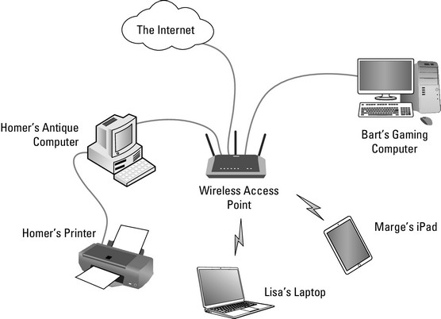
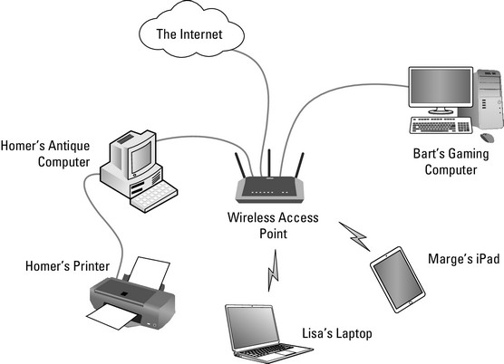

Computer Network:
"Datacom" redirects here. For other uses, see Datacom (disambiguation). For other uses, see Network. For the slogan, see The Network is the Computer. Part of a series on Network science Internet_map_1024.jpg Theory GraphComplex networkContagionSmall-worldScale-freeCommunity structurePercolationEvolutionControllabilityGraph drawingSocial capitalLink analysisOptimizationReciprocityClosureHomophilyTransitivityPreferential attachmentBalance theoryNetwork effectSocial influence Network types Informational (computing)TelecommunicationTransportSocialScientific collaborationBiologicalArtificial neuralInterdependentSemanticSpatialDependencyFlowon-Chip Graphs Features CliqueComponentCutCycleData structureEdgeLoopNeighborhoodPathVertexAdjacency list / matrixIncidence list / matrix Types BipartiteCompleteDirectedHyperMultiRandomWeighted MetricsAlgorithms CentralityDegreeMotifClusteringDegree distributionAssortativityDistanceModularityEfficiency Models Topology Random graphErdős–RényiBarabási–AlbertBianconi–BarabásiFitness modelWatts–StrogatzExponential random (ERGM)Random geometric (RGG)Hyperbolic (HGN)HierarchicalStochastic blockBlockmodelingMaximum entropySoft configurationLFR Benchmark Dynamics Boolean networkagent basedEpidemic/SIR ListsCategories TopicsSoftwareNetwork scientists Category:Network theoryCategory:Graph theory vte Operating systems Operating system placement.svg About this image Common features Process managementInterruptsMemory managementFile systemDevice driversNetworkingSecurityI/O vte A computer network is a set of computers sharing resources located on or provided by network nodes. The computers use common communication protocols over digital interconnections to communicate with each other. These interconnections are made up of telecommunication network technologies, based on physically wired, optical, and wireless radio-frequency methods that may be arranged in a variety of network topologies. The nodes of a computer network can include personal computers, servers, networking hardware, or other specialised or general-purpose hosts. They are identified by network addresses, and may have hostnames. Hostnames serve as memorable labels for the nodes, rarely changed after initial assignment. Network addresses serve for locating and identifying the nodes by communication protocols such as the Internet Protocol. Computer networks may be classified by many criteria, including the transmission medium used to carry signals, bandwidth, communications protocols to organize network traffic, the network size, the topology, traffic control mechanism, and organizational intent. Computer networks support many applications and services, such as access to the World Wide Web, digital video, digital audio, shared use of application and storage servers, printers, and fax machines, and use of email and instant messaging applications.
Use:
A computer network extends interpersonal communications by electronic means with various technologies, such as email, instant messaging, online chat, voice and video telephone calls, and video conferencing. A network allows sharing of network and computing resources. Users may access and use resources provided by devices on the network, such as printing a document on a shared network printer or use of a shared storage device. A network allows sharing of files, data, and other types of information giving authorized users the ability to access information stored on other computers on the network. Distributed computing uses computing resources across a network to accomplish tasks.
 
